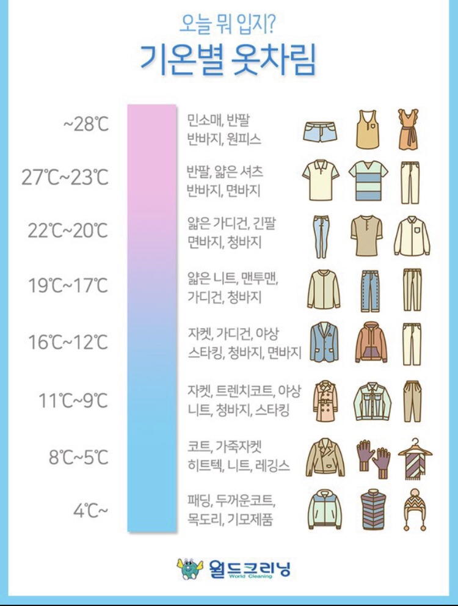
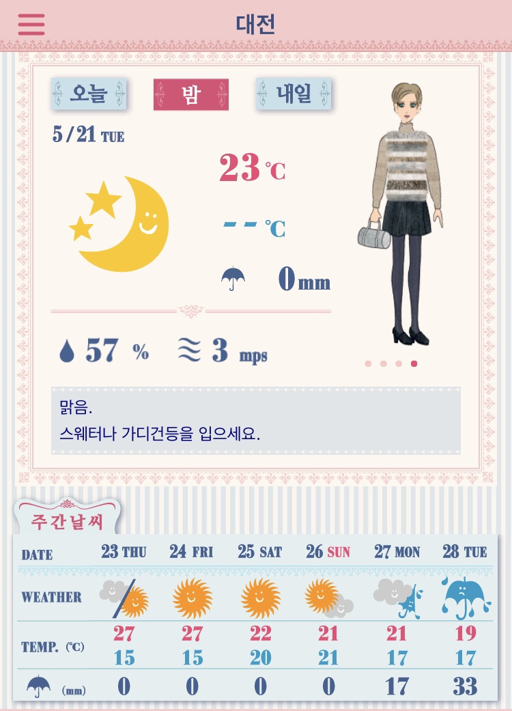
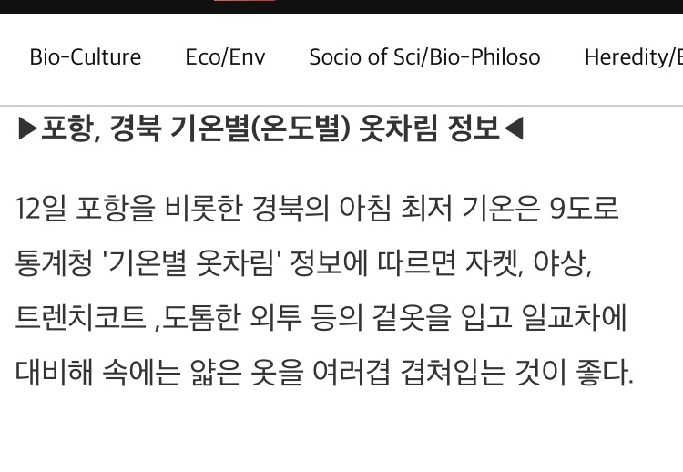

>
- 자기소개
- IT 서비스 소개
- IT 서비스와 관련되 자료
IT 서비스와 관련되 자료

기온별 옷차림을 추천해준다. 이 정보를 바탕으로 옷을 추천해주면 좋을 거 같다

"코디 날씨"라는 앱의 페이지이다. 그 날 기온이 어떤지 한 줄로 간략하게 요약해준다.
하지만 추천 코디를 그림체로 나타내어 많이 아쉽다

리서치 페이퍼 홈페이지에서는 매일 포항,경북 기온에 따른 옷차림 정보를 알려준다. 하지만 지역이 한정적이라서 아쉬운 점이 있다